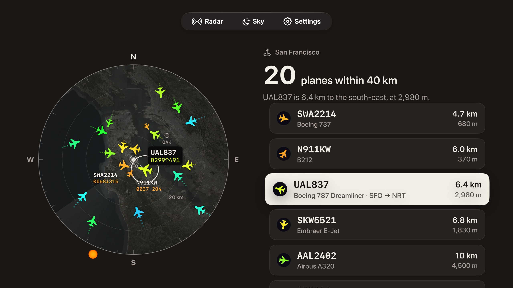
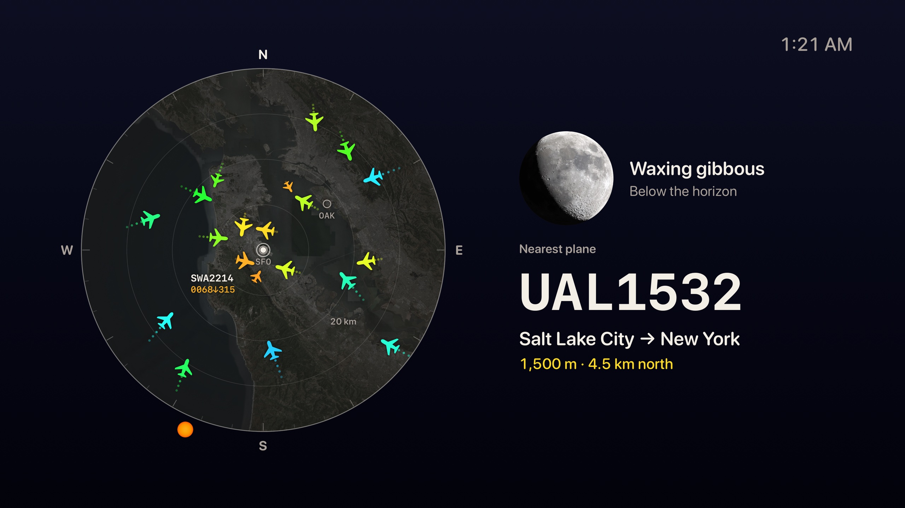
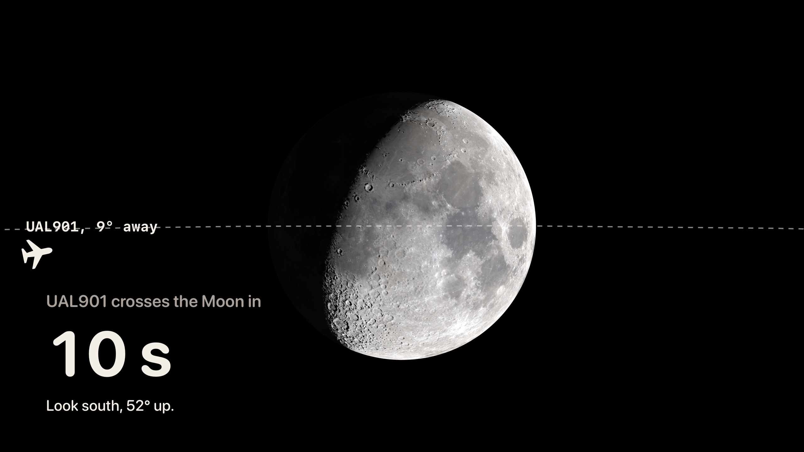
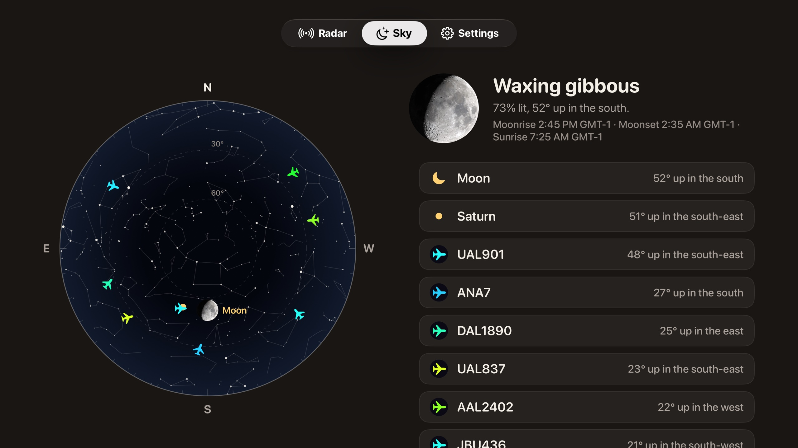
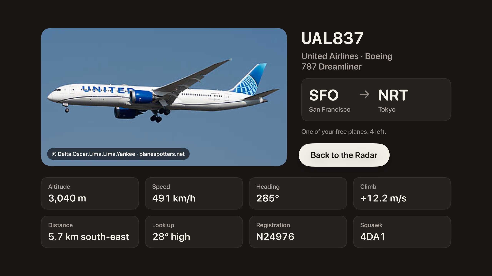
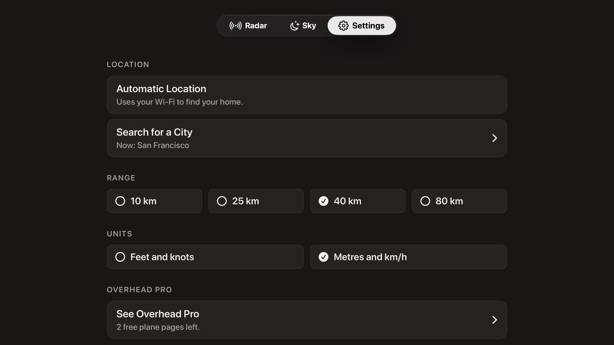
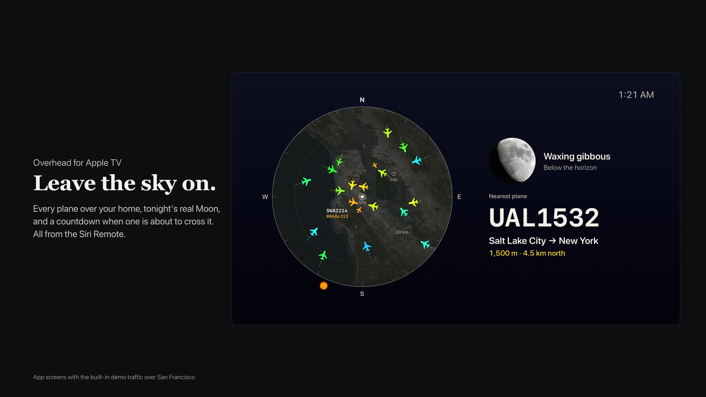
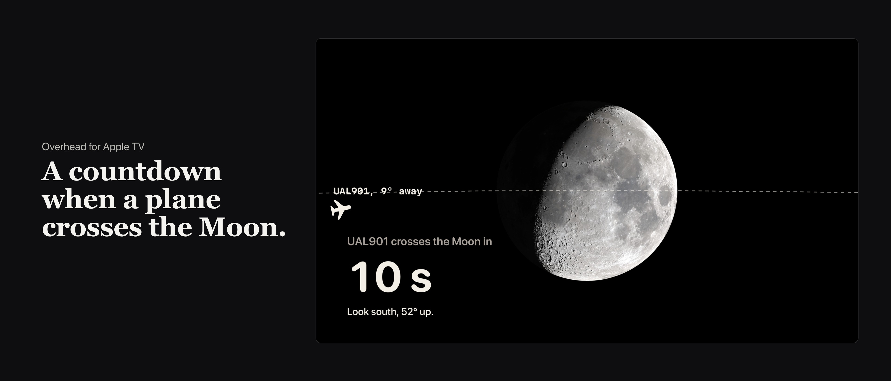
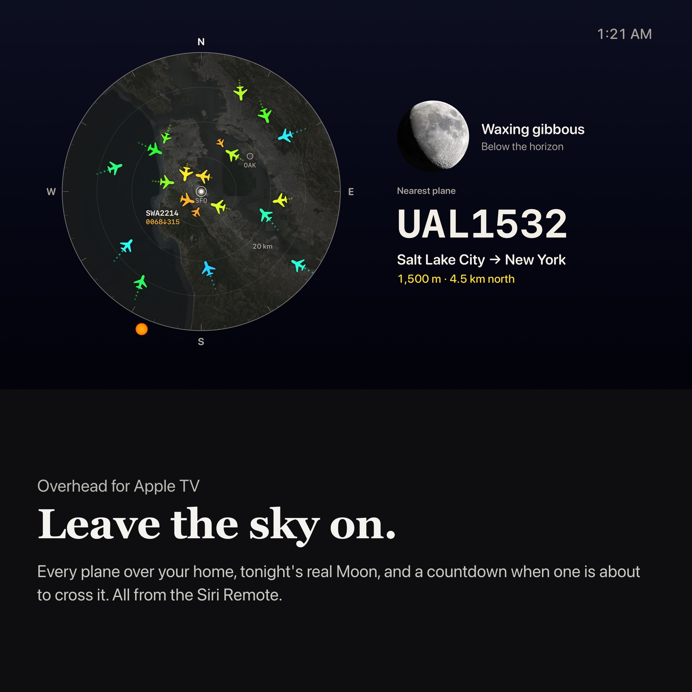

Overhead: Plane Tracker & ISS for Apple TV
Press kit · App Store · updated 20 Nov 2026

What is new
Overhead 2.5.2 adds a native Apple TV app, driven by the Siri Remote focus engine. The Radar tab is a round dial of the planes in range with a list beside it, and moving focus down the list lights each plane on the dial. Each plane has a page with a photo, route and numbers. The Sky tab is a star chart with the real Moon. Window seat turns the TV into a calm full-screen sky and counts down when a plane is about to cross the Moon or the Sun. A Top Shelf radar sits on the Home Screen.
Facts
- Version
- 2.5.2 (build 301), submitted to App Review 20 Nov 2026
- Platform
- Apple TV (tvOS), universal purchase with iPhone, iPad, Mac and Apple Vision Pro
- Languages
- App text in English (US, UK, Australia, Canada) and Spanish (Mexico, Spain); store page in 50 languages
- Price
- Free to download. The radar and the sky are free. Aircraft details are free for a few planes, then need one optional Overhead Pro purchase, the same on every device, with Family Sharing
- Privacy
- No account and no login. Location centres the radar and can be replaced by a typed place
- Accessibility
- Focusable items and dial planes have VoiceOver labels, everything is reachable with the Siri Remote, Reduce Motion stops plane gliding and the ambient drift, and type is sized for 10 feet.
- Window
- 18 Dec 2026 to 10 Jan 2027
- Developer
- Hemal Modi, one developer, Dubai
Screens
Captures from the tvOS Simulator at 3840 by 2160 with the app's built-in demo traffic over San Francisco, so the planes shown are staged. Positions in the shipped app come from live ADS-B feeds. No marketing frames. Click a screen for the 2560 px version.











Key art
Built only from the Apple TV app's own screens, with one serif headline. The text-free files are for editors who set their own type. No device frames.






- Text-free: tv-01-radar, 3840 by 2160
- Text-free: tv-03-window-seat, 3840 by 2160
- Text-free: tv-04-transit, 3840 by 2160
- All key art, JPEG, zip